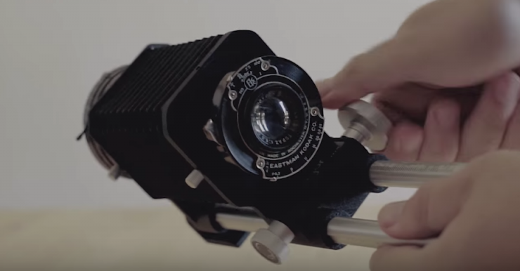

Optics
Theory :
Collimated light to determine focal length
Lesson on all photonic microscopy techniques and holographic two photon microscopy
Whole devices :
Holographic screens : Le Looking Glass portrait
Parallax Barrier : how to make a "3D" display without glasses

Building Laser :
Instructables schema from laser diode
Discussion on UV curing glues and UV lamps related
Active components :
AOM/AOD :
AOM (acousto optic modulators) :
{kind=link}
An acousto-optic modulator (AOM), also called a Bragg cell or an acousto-optic deflector (AOD), uses the acousto-optic effect to diffract and shift the frequency of light using sound waves (usually at radio-frequency).
AOD (acousto optic deflectors) :

An acousto-optic deflector (AOD) spatially controls the optical beam. In the operation of an acousto-optic deflector the power driving the acoustic transducer is kept on, at a constant level, while the acoustic frequency is varied to deflect the beam to different angular positions.
Cameras :
Calculator for working distance, working area, and focal length : https://www.flir.fr/iis/machine-vision/lens-calculator/
Embeded cards and cameras for AI live work - Built aroung NVIDIA Jetson nano
Board cameras : often use m12 mount (like raspberry pi ones) also called S mount (or board lens mount, or CCTV lens mount)
C-Mount (classic for industrial cameras)
RMS thread mount (for microscope planapo objectives) - From the royal microscopical society...
Focal distance adaptation :

Tutorial n°1 site web
Tutorial n°2 video youtube
Tutoriel n°3 video youtube
HyperSpectralImaging (more than 3 spectral lengths)
Linear Arrays :
Hamamatsu comparative (up to 46 pixels) designed for spectroscopy
InGaAs PIN photodiode array : G12430-046D : -46-element array - Large photosensitive area size
Passive components :
Optic Fibers
SCHOTT Fused Imaging Fiber Optics can be designed to magnify, minify, invert or simply transfer an original image to anywhere needed for defense, medical, and industrial applications.
Multimodal fiber optics : ref
-
Based on light modes
-
Limited in length by modal dispersion
Image transmission with multimode fibers :
https://yelin.net.technion.ac.il/files/2015/10/Image-transmission-through-fiber.pdf
https://www.nature.com/articles/s41467-019-10057-8
Lenses :
Refractive Lenses :
Lens quality and many interesting notions on camera lenses :
- Moulded & Ground Lenses
- Bokeh
Photographic lens designs :
{kind=link}
- Planar
- Tessar
- Sonnar
Catadioptric / reflective lenses :
Catadroptric system was often used in the 70-80s for telephoto lenses. Advantages and invonvenients :
Advantages : Lightweight , less expensive, no chromatic aberration
Disadvantages : donut bokeh (can be an advantage as it is quite artistic), fixed aperture and focal length, vignetting, low contrast
Prisms:

- Wedge Prisms : a set of 2 can allow for 2D displacement of a light ray(can be both used for projecting or reading with an adjustable FOV camera) if both are rotatively controlled.
-
Dove prisms are able to retroreflect (and invert) image or rotate the image by twice the angle applied to the prism relative to the image source orientation.
-
Risley Prism Beam (RPUPS - universal pointing system) ( based on wedge prisms )

Anti reflective coating to reduce reflected light - works in specific wavelength ranges usually
Suppliers :
Semrock (brightline )
)
Chroma filters
Optoprim
Edmund optics
Throlabs
Andover corporation